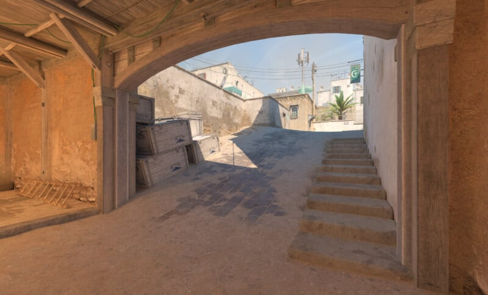
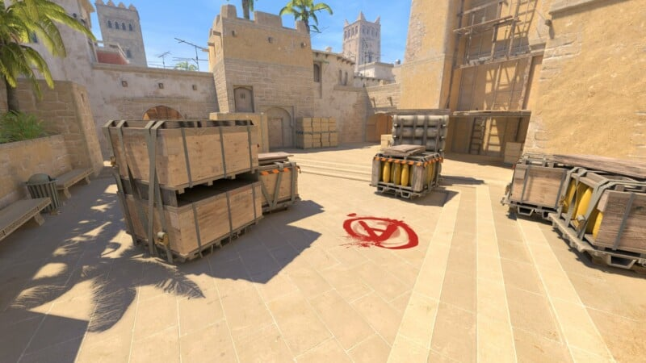
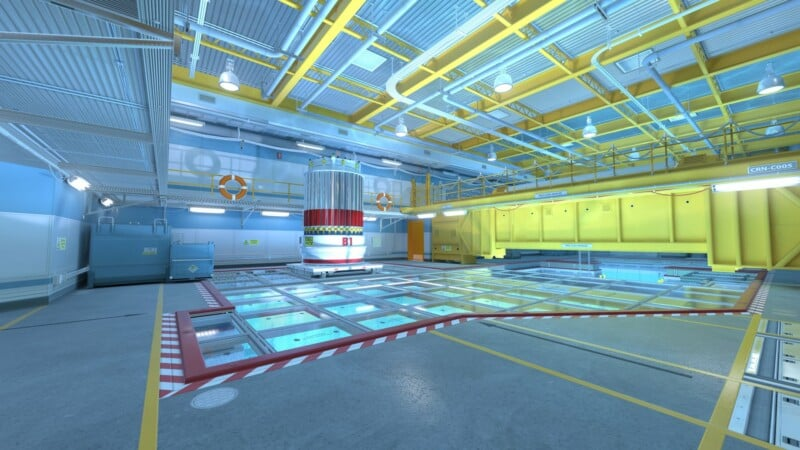

Mapas ativos na rotação do cenário competitivo de Counter-Strike
Os cenários das partidas do Counter-Strike são icônicos, tendo influenciado a criação dos locais em outros jogos do gênero FPS. Mais do que isso, os mapas se tornaram fundamentais para o cenário competitivo da modalidade.
Atualmente, o map pool do Counter-Strike 2 é formado por cinco mapas clássicos — que estão desde o primeiro Major de CS:GO — e dois mais novos que compõem a lista dos sete mapas na rotação ativa do competitivo.
DUST2
A Dust2 é o mapa mais popular na história do Counter-Strike, aquele que ao bater o olho automaticamente remete ao FPS da Valve. Ela passou por muitas mudanças estruturais para chegar na versão atual e chegou a ficar fora da rotação ativa, até ser reintroduzida em abril de 2024 no lugar da Overpass.
MIRAGE
Apesar da Dust2 ser a representação de um mapa para Counter-Strike, a Mirage se tornou a queridinha da comunidade desde o CS:GO, principalmente por ser leve em qualquer computador. Além disso, ela oferece o básico bem feito para um jogo coletivo e individual, não à toa é o único mapa presente em todos os Majors na história do CS.
INFERNO
A Inferno teve a primeira versão oficial lançada no Counter-Strike 1.1. Com um layout diferente dos outros mapas do CS, esse cenário apresenta lugares mais fechados e ganhou o público do competitivo pela emoção com grandes clutches. A Inferno ficou fora da rotação por quase um ano, não participou de dois Majors e voltou no PGL Major Kraków 2017.

TRAIN
A Train também é um mapa clássico, presente desde os mods de Half-Life e está atualmente na rotação competitiva do Counter-Strike. É um mapa bom para quem joga de AWP e adorado pela comunidade brasileira. A Train recebeu uma grande reformulação para o CS2 e voltou ao competitivo — após estar quatro anos fora — no lugar da Vertigo em janeiro de 2025.

NUKE
A Nuke finaliza os mapas clássicos que estão na rotação atual do competitivo. Mapa baseado em uma usina nuclear e que também sofreu diversas alterações desde a primeira versão. Ela fica quase um ano fora do competitivo e voltou em 2017. Desde então, a Nuke é um dos principais mapas do jogo, tanto para o público casual quanto para os profissionais.
ANCIENT
Nos últimos anos, a Valve tem buscado renovar os mapas do jogo e uma das apostas foi a Ancient. Introduzida no dia 3 de dezembro com a Operação Presa Quebrada, o mapa, que lembra Aztec por ser predominantemente verde, ingressou ao map pool competitivo em maio de 2021 no lugar da Train e não saiu até então.

ANUBIS
Outra escolha arriscada da desenvolvedora foi Anubis, outro mapa com temática de areia, mas que possui a peculiaridade de beneficiar os TRs. Anubis entrou no competitivo em novembro de 2022, substituindo Dust2.